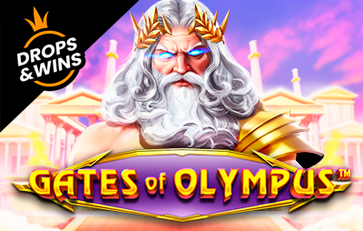
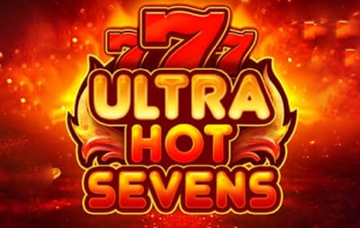
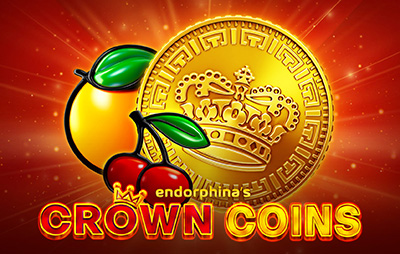

Chancebet non è più operativo: guida e alternative
Il vecchio marchio non opera più come piattaforma separata.

Gates of OlympusPragmatic Play Royal Fruits 5Amatic
Royal Fruits 5Amatic Sweet Bonanza 1000Pragmatic Play
Sweet Bonanza 1000Pragmatic Play Book of Ra MagicNovomatic
Book of Ra MagicNovomatic Chicken CoinWazdan
Chicken CoinWazdan Fruit MillionNetEnt
Fruit MillionNetEnt Book of the FallenPragmatic Play
Book of the FallenPragmatic Play
Ultra Hot SevensAmatic Joker’s JewelsPragmatic Play
Joker’s JewelsPragmatic Play
Crown CoinsSlot Dolphin’s PearlNovomatic
Dolphin’s PearlNovomatic Lucky Lady’s CharmNovomatic
Lucky Lady’s CharmNovomaticIl login sul vecchio sito non risponde più.
In breve, se cerchi il vecchio Chancebet:
- Il sito Chancebet è chiuso: il login non funziona più.
- Questa informazione riguarda il servizio storico Chancebet. Le offerte operative disponibili oggi sono raccolte nel confronto della pagina.
- Accedi con le credenziali di prima; se hai perso la password, usa il recupero.
- Per le scommesse e il casinò usa esclusivamente piattaforme operative con condizioni e licenza verificabili.
In questa recensione mettiamo in fila tutto il resto: licenza, catalogo, bonus, metodi di pagamento e la procedura completa per rimetterti a giocare in pochi minuti.
Chancebet Casino: panoramica e recensione
Per anni Chancebet è stato uno dei marchi più riconoscibili nel gioco online italiano. Dietro il brand c'è Vittoria Bet 2009 S.r.l., società nata in Italia nel 2009, che ha costruito la sua offerta su due gambe solide: casinò e scommesse sportive, con qualche puntata su poker, bingo e Gratta e Vinci.
Il vero cavallo di battaglia è il catalogo: quasi 3.000 titoli, affiancati da un palinsesto di 28 discipline e da promozioni giocate sul cashback mensile invece che sui soliti bonus di benvenuto gonfiati. Il nostro giudizio complessivo, su base redazionale, è 4,4 su 5: piattaforma affidabile e legalmente inattaccabile, con qualche margine di miglioramento sul rollover dei bonus.
Licenza, sicurezza e affidabilità
Partiamo dalla domanda che pesa di più: è un operatore legale? Sì, senza zone grigie. Vittoria Bet 2009 S.r.l. è titolare della concessione ADM GAD 16046 rilasciata dall'Agenzia delle Dogane e dei Monopoli (la ex AAMS). Il gioco offerto è quindi autorizzato dallo Stato italiano, i software sono certificati e i fondi dei giocatori tutelati.
Qualche dato concreto sul profilo societario:
- Ragione sociale: Vittoria Bet 2009 S.r.l.
- P.IVA: 12027280960
- Sede legale: Viale della Libertà 106, 95129 Catania (CT)
- Concessione: ADM GAD 16046
- Certificazioni: ISO 9001:2015 (gestione della qualità), ISO 14001:2015 (gestione ambientale), ISO 26000 (responsabilità sociale)
Sul piano tecnico, transazioni e dati personali viaggiano sotto crittografia SSL, lo standard che blocca le intercettazioni durante depositi e prelievi. A completare il quadro, gli strumenti di gioco responsabile previsti dalla normativa ADM: limiti di versamento, autoesclusione temporanea o permanente, verifica dell'identità con documento valido da inviare via email o WhatsApp. Il gioco, ovvio, è vietato ai minori di 18 anni.
Catalogo dei giochi Chancebet
I giochi Chancebet sono la ragione per cui il marchio è piaciuto tanto agli italiani: quasi 3.000 titoli, tra slot e giochi da tavolo, firmati da provider come NetEnt ed Espresso. NetEnt, in particolare, è una garanzia per chi ama le slot moderne, grafica curata e funzioni bonus ben studiate.
Ecco com'è organizzata l'offerta:
- Slot: il grosso del catalogo, dalle classiche a tre rulli alle video slot con jackpot e funzioni speciali
- Roulette: versione europea e varianti da tavolo
- Blackjack: il classico 21, anche in più versioni
- Baccarat: ritmo sostenuto e regole essenziali, per chi le cerca
- Poker: tavoli cash e versioni da casinò
- Bingo, Keno e Gratta e Vinci: sessioni veloci e leggere
Accanto al casinò c'è la sezione scommesse: 28 sport in palinsesto, dal calcio di Serie A al tennis, fino agli eSports con League of Legends, CS2 e Dota 2. Il payout dichiarato sul calcio è del 93,8% (rilevazione di terze parti), sopra la media italiana ferma tra il 91% e il 92%. Un dettaglio che pesa, per chi scommette con regolarità.
Il passo successivo è confrontare bonus, pagamenti e requisiti delle piattaforme attive, non cercare un nuovo accesso al vecchio brand.
Bonus e promozioni Chancebet
La filosofia promozionale qui esce dai binari soliti: invece di puntare tutto sul benvenuto, il piatto forte è il cashback mensile. Il meccanismo è lineare — si calcola la differenza tra quanto hai giocato e quanto hai vinto nel mese (giocato − vinto), e su quella base scatta un rimborso che va dal 15% al 25%.
Le regole principali:
- I coupon arrivano il giorno 3 di ogni mese
- Valore massimo del coupon: 750 €
- Validità: un mese per le slot, 7 giorni per le scommesse
- I coupon non si usano nei sistemi
- Del coupon sono prelevabili solo le vincite, non l'importo in sé
Per le scommesse sportive valgono singole o multiple con quota minima 2.00, e servono almeno cinque scommesse al mese per restare in promozione. Nel casinò il bonus gira solo sulle slot; nel poker contano solo le partite cash.
Una nota di trasparenza: il rollover sul bonus di benvenuto è fissato a 35x , sopra la media del mercato italiano. In soldoni, prima di prelevare le vincite generate dal bonus devi movimentare un volume di gioco tutt'altro che banale.
Metodi di pagamento: depositi e prelievi
Il ventaglio è ampio e copre sia chi preferisce gli e-wallet sia chi resta fedele ai canali italiani di sempre, PostePay in testa. Sui depositi l'operatore non applica commissioni.
| Metodo | Deposito | Prelievo | Tempi di prelievo |
|---|---|---|---|
| Skrill | ✅ | ✅ | Immediato (dichiarato) |
| Neteller | ✅ | ✅ | Immediato (dichiarato) |
| PostePay | ✅ | ✅ | Immediato (dichiarato) |
| Nuvei | ✅ | ✅ | Immediato (dichiarato) |
| Bonifico bancario | ✅ | ✅ | 3-5 giorni lavorativi |
| Rapid Transfer by Skrill | ✅ | ❌ | — |
| Bollettino Postale | ✅ | ❌ | — |
| Bonifico domiciliato | ❌ | ✅ | 3-5 giorni lavorativi |
| Prelievo in punto vendita | ❌ | ✅ | Immediato presso il punto vendita |
Due cose da fissare in testa. La prima: la velocità "immediata" è quella dichiarata dall'operatore per i canali elettronici; sui bonifici serve pazienza, siamo sui 3-5 giorni lavorativi. La seconda: prima del primo prelievo devi completare la verifica del conto inviando un documento di riconoscimento, cosa che fai comodamente via email o WhatsApp.
Casinò mobile e app Chancebet
Giocare da smartphone non è un problema: la piattaforma è ottimizzata per il browser mobile, quindi non scarichi nulla. Apri il sito da Safari, Chrome o qualsiasi altro browser, fai il login e hai sotto mano catalogo completo, promozioni attive e saldo, sia su iOS sia su Android.
L'esperienza mobile ricalca quella desktop senza tagli: le slot girano fluide, i menù sono ripensati per il touch e anche la gestione del conto — depositi, prelievi, caricamento documenti — si fa tutta dal telefono.
Layout, usabilità e assistenza clienti
Il sito punta su un design pulito e funzionale: niente fuochi d'artificio, ma navigazione intuitiva tra casinò e sport, caricamenti rapidi, menù che si capiscono al primo sguardo. Anche chi non ha mai aperto un conto trova la bolletta o la slot che cerca in pochi tocchi.
Sul fronte assistenza, l'operatore lavora 7 giorni su 7 su tre canali:
- WhatsApp: per chi preferisce scrivere dal telefono (contatto indicato sul sito)
Chancebet non è più operativo: guida e alternative
Ed eccoci al punto che interessa di più chi cerca il marchio oggi. La tua esperienza di gioco continua e migliora.
Cosa fare, passo per passo:
- Il vecchio sito Chancebet non è più operativo. Per giocare oggi, confronta le piattaforme attive presentate in questa pagina.
- Accedi con le tue credenziali abituali; se hai perso la password, usa il recupero
- Trovi saldo e promozioni attive già caricati sul conto, senza dover chiedere nulla
- Non usare il vecchio accesso Chancebet né inserire credenziali su domini simili. Scegli una piattaforma attiva dal confronto.
Anche le posizioni aperte, come bollette in corso o coupon non ancora usati, restano legate al conto; per dubbi su una singola giocata, l'assistenza resta il riferimento giusto.
La cosa importante, in ogni caso, è restare su piattaforme autorizzate e diffidare dei siti senza licenza.
Verdetto finale: pro e contro
Tiriamo le somme. Voto redazionale finale 4,4 su 5: operatore italiano, legale, con un catalogo che non sfigura davanti ai big e un sistema di cashback concreto, frenato da requisiti di puntata esigenti e da un parco provider ristretto.
| Pro | Contro |
|---|---|
| Concessione ADM GAD 16046 e società italiana attiva dal 2009 | Rollover del bonus di benvenuto a 35x, sopra la media |
| Quasi 3.000 giochi tra slot e tavoli | Parco provider ristretto (NetEnt ed Espresso) |
| Cashback mensile fino al 25%, massimo 750 € | Coupon non utilizzabile nei sistemi, prelevabili solo le vincite |
| Payout calcio al 93,8%, sopra la media di mercato | Per le scommesse e il casinò usa esclusivamente piattaforme operative con condizioni e licenza verificabili. |
| Assistenza 7 giorni su 7, anche via WhatsApp | Nessuna app nativa da scaricare |
| Il passo successivo è confrontare bonus, pagamenti e requisiti delle piattaforme attive, non cercare un nuovo accesso al vecchio brand. | Requisiti sport impegnativi: quota minima 2.00 e cinque scommesse al mese |
E le recensioni degli utenti? Quelle raccolte in rete raccontano una storia coerente: i giocatori apprezzano la puntualità del cashback, la reattività del supporto e la rapidità dei prelievi sugli e-wallet. Le critiche battono soprattutto sul wagering del benvenuto e, nell'ultimo periodo, sulla confusione iniziale del passaggio al nuovo dominio — confusione che però si scioglie in pochi minuti seguendo la procedura qui sopra.
FAQ: domande frequenti su Chancebet
Chancebet è legale in Italia? Sì. L'operatore Vittoria Bet 2009 S.r.l. è titolare della concessione ADM GAD 16046, quindi il gioco è autorizzato e regolamentato dallo Stato italiano.
Perché non riesco più ad accedere al mio account Chancebet?
No. Se dopo il login noti discrepanze, contatta subito l'assistenza via email o live chat.
Quali metodi di pagamento accetta la piattaforma? Per i depositi: bonifico bancario, Skrill, Rapid Transfer, Neteller, bollettino postale, Nuvei e PostePay. Per i prelievi si aggiungono il bonifico domiciliato e il ritiro presso il punto vendita. I prelievi elettronici sono dichiarati immediati, i bonifici richiedono 3-5 giorni lavorativi.
Come posso contattare l'assistenza clienti?